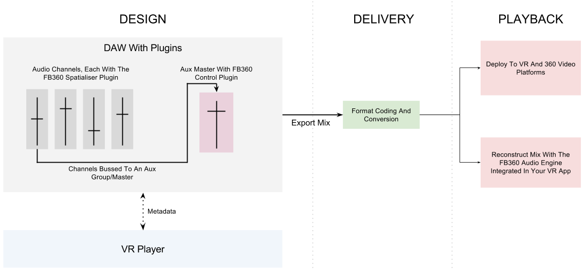
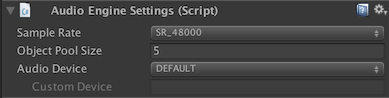
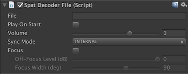
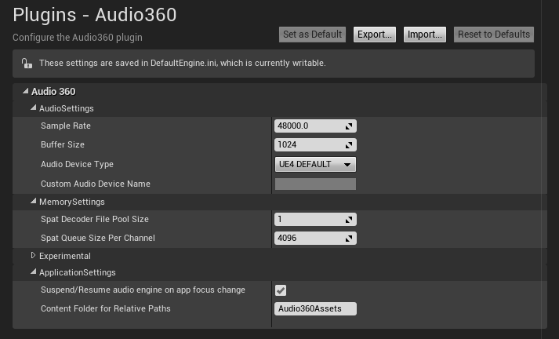
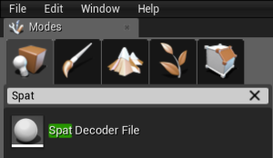
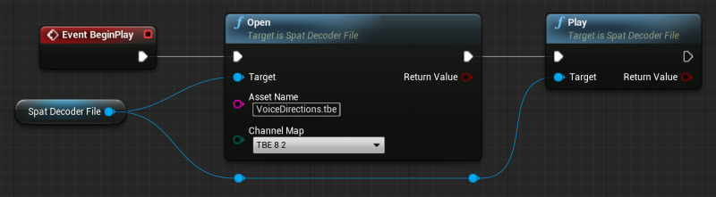
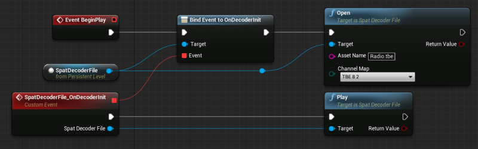

Getting Started¶
The Audio360 Audio Engine is a light-weight cross-platform SDK for playing back spatial audio.
Supported Platforms¶
- Windows 7+
- Windows UWP (Windows 10, VS2016 and VS2017)
- macOS 10.7+
- Android 4.3+
- iOS 7.0+
Workflow¶
The SDK decodes ambisonic audio that is usually created with the FB360 Spatial Workstation. Additionally, it can also playback and spatialise mono and stereo audio.
WHen using Spatial Workstation, the whole workflow, from design to playback, consists of the following components:
- A suite of audio workstation plugins, tools, video playback software that helps sound designers author content for cinematic VR experiences.
- FB360 EncoderThe encoder converts the mix from the sound designer’s audio workstation into a variety of spatial audio formats, some of which can be decoded by the Audio Engine
- Audio360 Audio EngineThe mix designed in the audio workstation is reconstructed binaurally with taking head-tracking
The workflow for mixing and delivering content can be divided into three major stages, as illustrated in the image below.
SDK¶
Folder Structure¶
The release folder you are provided with includes the following folders:
- ./Audio360/include : All required header files. This folder would need to be included in the “header includes” property of your IDE or build system
- ./Audio360/macOS : Dynamic library (.dylib) for macOS
- ./Audio360/Windows/ : Dynamic library (.dll) and import library (.lib) for 32 and 64 bit Windows
- ./Audio360/WindowsStore : Dynamic library (.dll) and import library (.lib) for 64 bit Windows UWP compiled for VS toolset v140 (VS2015) and v141 (VS2017)
- ./Audio360/iOS : Static library (.a) for iOS
- ./Audio360/Android/ : Dynamic libraries (.so) and static libraries (.a) for Android
- ./Audio360/Android-Java/audio360.aar : Android library (Java + native libraries) that exposes the C++ API functionality in Java
- ./Audio360/Android-Java/audio360-exo.. : Android libraries for ExoPlayer that allows the Audio360 engine to be used as an audio sink and renderer in ExoPlayer, for decoding Matroska/WebM files with Opus audio
- ./Audio360/Unity : Cross-platform integration for Unity
- ./Examples/ : Example projects ranging from a terminal app (for Windows and macOS) to ExoPlayer and FFmpeg that shows basic functionality of the SDK
Setup¶
Unity¶
See Unity Integration.
C++¶
The C++ SDK is compatible with all supported platforms (see Supported Platforms). Depending on your IDE, platform and build system, you would need to:
- Add Audio360/include to the header include search path
- Add the Audio360 shared or static library to your linker settings. It is generally recommended to use the shared libraries when possible.
iOS¶
The iOS static libraries provided with the SDK are compatible with the C++ API which can be called from Objective-C++.
Android (Java)¶
The Java bindings for the Audio360 SDK is distributed as a .aar file: Audio360/Android-Java/audio360.aar.
Open your Android Studio project
Go to
Select Import .JAR/.AAR Package from the grid of options and select Next
Load Audio360/Android-Java/audio360.aar into the File name: field and select Finish. audio360.aar should be copied to your project.
In the Android Studio project window, open the build.gradle file for your app (typically Module: app)
- Under the dependencies block, add
compile project(":audio360")
Sync your project’s gradle files
You can now setup the audio engine. The Java classes and native libraries will be included every time you build your project.
public class MainActivity extends Activity {
private AudioEngine engine;
private SpatDecoderFile spat;
private AudioObject object;
private float SAMPLE_RATE = 48000.f;
@Override
protected void onCreate(Bundle savedInstanceState) {
super.onCreate(savedInstanceState);
setContentView(R.layout.activity_main);
engine = AudioEngine.create(SAMPLE_RATE, /* context */);
spat = engine.createSpatDecoderFile();
object = engine.createAudioObject();
spat.open("file.tbe");
spat.play();
object.open("mono.opus");
object.play();
engine.start();
}
@Override
public void onResume() {
super.onResume();
// Resume all audio processing
engine.start();
}
@Override
public void onPause() {
super.onPause();
// Suspend all audio processing when the app is paused
engine.suspend();
}
@Override
public void onDestroy (){
super.onDestroy();
engine.destroySpatDecoderFile(spat);
engine.destroyAudioObject(object);
engine.delete();
spat = null;
object = null;
engine = null;
}
}
WWW (JavaScript)¶
The Javascript SDK allows web applications to play webm+opus encoded video files that contain spatial audio in the following formats:
- Facebook TBE 8 (8 channels hybrid higher order ambisonic)
- Facebook TBE 8.2 (8 channels ambisonic plus a stereo track)
- AmbiX 1st order
- AmbiX 2nd order
- Ambix 9.2 (ambiX 2nd order plus a stereo track)
The Javascript SDK is packed in the FBAudio.js file and a demo index.html is provided in the Audio360/www folder for reference.
To view the demo application:
- cd to Audio360/www
- Run a local http server in this folder (python -m SimpleHTTPServer, for example)
- Open localhost:[local server port] in either Chrome or Firefox
The WWW SDK API consists of the following objects:
- FBAudio - the main library object
- FBAudio.Audio360 - the spatial audio renderer object
- FBAudio.Format - format enumeration object
Supported formats are described by the FBAudio.Format object:
const Format =
{
AMBIX_FOA: 0,
AMBIX_SOA: 1,
TBE_6: 2,
TBE_6_2: 3,
TBE_8: 4,
TBE_8_2: 5,
AMBIX_9_2: 6,
}
The Audio360 API is described below:
/*
* Call this method to construct a new Audio360 renderer, where:
* element: The HTMLMediaElement for the video containing spatial audio
* context: A WebAudio API AudioContext object
* Format: one of the FBAudio.Format enumeration values
*/
Audio360(element: HTMLMediaElement, context: AudioContext, format: Format);
/*
* Call this method to set the listener orientation when the viewport changes.
* yaw: from -180 (left) to +180 (right). Center is 0
* pitch: from -180 (down) to +180 (up). Center is 0
* roll: from -180 (roll left) to +180 (roll right). Center is 0
*/
Audio360.setListenerOrientation(yaw: number, pitch: number, roll: number);
/*
* Call this method to set the focus of the field.
* width: The width of the focus area in degrees (40 min / 120 max)
* level: The attenuation in decibels of the off-focus area (-24.0 min / 0.0 max)
*/
Audio360.setFocus(width: number, level: number);
/*
* Call this method whenever you are destroying an Audio360 object
* to release internally used resources.
*/
Audio360.cleanup()
The provided index.html under Audio360/www contains an example of setting up renderers for the different audio formats. Here is a simple example usage:
var audioContext = new AudioContext();
var video = document.getElementById('ambix_9_2'); // ambix_9_2 is an html media element that holds the video
var renderer = new FBAudio.Audio360(video, audioContext, FBAudio.Format.AMBIX_9_2);
// All done. Don't forget to call FBAudio.Audio360.cleanup() to release resources
General Concepts¶
The SDK includes four major components:
- AudioEngine: Functionality for audio hardware compatibility, memory allocation, mixing and controlling global parameters such as the orientation and position of the listener
- SpatDecoderQueue: An object for enqueuing and decoding spatial audio streams
- SpatDecoderFile: An object for decoding spatial audio files
- AudioObject: Spatialise mono and stereo audio files/streams
Other components (might not be supported in Java/C#):
- AudioFormatDecoder: An object for decoding audio formats, such as opus packets, wav files and .tbe files, to PCM audio.
- IOStream: Abstract interface for implementing your own streams that can be used with SpatDecoderFile.
Object Lifecycle¶
While an instance of the AudioEngine must be explicitly created and destroyed, SpatDecoderQueue, SpatDecoderFile and AudioObject objects must be created from the AudioEngine.
C++:¶
using namespace TBE;
// Create the AudioEngine with default settings
AudioEngine* engine{nullptr};
TBE_CreateAudioEngine(engine);
// Create objects from AudioEngine's memory pool
SpatDecoderQueue *queue{nullptr};
engine->createSpatDecoderQueue(queue);
SpatDecoderFile *file{nullptr};
engine->createSpatDecoderFile(file);
AudioObject *obj{nullptr};
engine->createAudioObject(obj);
// Cleanup
// These objects can be explicitly destroyed, but will also be
// automatically destroyed if they aren't when TBE_DestroyAudioEngine is called
engine->destroySpatDecoderQueue(queue);
engine->destroySpatDecoderFile(file);
engine->destroyAudioObject(obj);
TBE_DestroyAudioEngine(engine);
Java/Android:¶
import com.twobigears.audio360.*
public class SomeActivityClass
{
private AudioEngine engine;
private SpatDecoderQueue spatQueue;
private SpatDecoderFile spatFile;
private AudioObject obj;
private final static float SAMPLE_RATE = 48000.f;
void onCreate()
{
// Create the AudioEngine with default settings and sample rate
engine = AudioEngine.create(SAMPLE_RATE, this /* context */);
// Create objects from AudioEngine's memory pool
spatQueue = engine.createSpatDecoderQueue();
spatFile = engine.createSpatDecoderFile();
obj = engine.createAudioObject();
}
void onDestroy()
{
// Cleanup
// These objects can be explicitly destroyed, but will also be
// automatically destroyed if they aren't when engine.delete() is called
engine.destroySpatDecoderQueue(spatQueue);
spatQueue = null;
engine.destroySpatDecoderFile(spatFile);
spatFile = null;
engine.destroyAudioObject(obj);
spatFile = null;
engine.delete();
engine = null;
}
}
Memory And Pool Allocation¶
The memory pool size and other settings can be specified when the AudioEngine is created. The below example is in C++, but similar functionality is available in Java.
using namespace TBE;
EngineInitSettings initSettings = EngineInitSettings_default;
initSettings.memorySettings.spatDecoderQueuePoolSize = 2;
initSettings.memorySettings.spatDecoderFilePoolSize = 2;
initSettings.memorySettings.audioObjectPoolSize = 64;
AudioEngine* engine;
TBE_CreateAudioEngine(engine, initSettings);
SpatDecoderQueue *queue;
engine->createSpatDecoderQueue(queue);
SpatDecoderFile *file;
engine->createSpatDecoderFile(file);
AudioObject *obj{nullptr};
engine->createAudioObject(obj);
Error State¶
Most methods return a type EngineError to signal the error or success state, with EngineError::OK signalling success. Certain objects might also signal their state through event based callbacks as detailed under Event Callbacks.
Audio Device Settings¶
By default the AudioEngine mixes and enqueues buffers to the system’s default audio device using openSL on Android, CoreAudio on iOS/macOS and WASAPI on Windows.
Custom Audio Device
A custom audio device name can be specified on initialisation.
EngineInitSettings initSettings = EngineInitSettings_default;
initSettings.audioSettings.deviceType = AudioDeviceType::CUSTOM;
initSettings.audioSettings.customAudioDeviceName = "Headphones (Rift Audio)";
AudioEngine* engine;
TBE_CreateAudioEngine(engine, initSettings);
// You can also query information from the OS:
const char* name = engine->getOutputAudioDeviceName();
int numDevices = AudioEngine::getNumAudioDevices();
const char* deviceName = AudioEngine::getAudioDeviceName(index);
Disabling The Audio Device
While the default behaviour is recommended, the audio device can be disabled and you can instead get buffers from the AudioEngine’s mixer to implement within your own process. The below example is in C++, but similar functionality is available in Java with some penalty in copying a float buffer across the JNI boundary.
// Disable audio device
EngineInitSettings initSettings = EngineInitSettings_default;
initSettings.audioSettings.deviceType = AudioDeviceType::DISABLED;
// Match the AudioEngine's sample rate and buffer size to your audio device
initSettings.audioSettings.sampleRate = sample_rate;
initSettings.audioSettings.bufferSize = buffer_size;
AudioEngine* engine;
TBE_CreateAudioEngine(engine, initSettings);
// Get interleaved buffers from the mixer
engine->getAudioMix(float_buffer, num_samples_in_buffer);
Channel Maps¶
The SpatDecoderQueue and SpatDecoderFile objects use a ChannelMap enumerator to specify the spatial audio format being decoded.
- ChannelMap::TBE_8_2: The original .tbe format specification, with 8 channels of spatial audio and 2 channels of head-locked audio
- ChannelMap::TBE_8: 8 channels of spatial audio with no head-locked audio
- ChannelMap::TBE_6_2: 6 channels of spatial audio and 2 channels of head-locked audio. Compared to TBE_8_2, there will be some loss in spatial quality
- ChannelMap::TBE_4_2: 4 channels of spatial audio and 2 channels of head-locked audio. Compared to TBE_8_2, there will be significant loss in spatial quality
- ChannelMap::TBE_4: 4 channels of spatial audio and no head-locked audio. Compared to TBE_8, there will be significant loss in spatial quality
- ChannelMap::TBE_8_PAIR0, ChannelMap::TBE_8_PAIR1, ChannelMap::TBE_8_PAIR2, ChannelMap::TBE_8_PAIR3: The 8 channels of spatial audio can be enqueued in pairs. This might be useful if you are using a codec or container that allows only for two channel tracks
- ChannelMap::TBE_CHANNEL0, ChannelMap::TBE_CHANNEL1, ChannelMap::TBE_CHANNEL2, ChannelMap::TBE_CHANNEL3, ChannelMap::TBE_CHANNEL4, ChannelMap::TBE_CHANNEL5, ChannelMap::TBE_CHANNEL6, ChannelMap::TBE_CHANNEL7: The 8 channels of spatial audio can be enqueued individually. This might be useful if you are using a codec or container that allows only for single channel tracks
- ChannelMap::HEADLOCKED_STEREO: Enqueue only the 2 channels of head-locked audio
- ChannelMap::AMBIX_4: Enqueue first order ambisonics using the ambiX convention
- ChannelMap::AMBIX_9: Enqueue second order ambisonics using the ambiX convention
- ChannelMap::AMBIX_9_2: Enqueue second order ambisonics using the ambiX convention with 2 channels of head-locked audio
Event Callbacks¶
AudioEngine::setEventCallback, SpatDecoderQueue::setEventCallback and SpatDecoderFile::setEventCallback can be used to listen to events from each object. A few events include:
- Events::ERROR_BUFFER_UNDERRUN:
- Dispatched by AudioEngine when the mixer is unable to process audio in time.
- Events::ERROR_QUEUE_STARVATION:
- Dispatched by SpatDecoderQueue and SpatDecoderFile when enqueued audio is not being decoded in time.
- Events::DECODER_INIT:
- Dispatched by SpatDecoderFile when an opened file is ready for playback.
- Events::END_OF_STREAM:
- Dispatched by SpatDecoderFile when an opened file has completed playing.
void eventCallback(Event event, void *owner, void *userData)
{
if (event == Event::ERROR_BUFFER_UNDERRUN)
{
LOG("Mixer starvation!");
}
}
engine->setEventCallback(eventCallback, this);
Java:¶
SpatDecoderFile file;
void init()
{
engine = AudioEngine.create(SAMPLE_RATE, this /*context*/);
engine.start();
file = engine.createSpatDecoderFile();
file.setEventListener(new EventListener() {
@Override
public void onNewEvent(Event event) {
if (event == Event.DECODER_INIT) {
file.play();
}
}
});
}
Scheduling Transport Events¶
The Audio Engine includes basic functionality for scheduling single events. It is currently not possible to schedule multiple events of the same type. For example, a call to play can overwrite a previous call to playScheduled.
// Schedule immediate playback
SpatDecoderFile::play();
SpatDecoderQueue::play();
AudioObject::play();
// Schedule playback
SpatDecoderFile::playScheduled(timeMs);
SpatDecoderQueue::playScheduled(timeMs);
AudioObject::playScheduled(timeMs);
// Playback with fade
SpatDecoderFile::playWithFade(timeMs);
SpatDecoderQueue::playWithFade(timeMs);
AudioObject::playWithFade(timeMs);
// Schedule immediate pause
SpatDecoderFile::pause();
SpatDecoderQueue::pause();
AudioObject::pause();
// Schedule pause
SpatDecoderFile::pauseScheduled(timeMs);
SpatDecoderQueue::pauseScheduled(timeMs);
AudioObject::pauseScheduled(timeMs);
// Pause with fade
SpatDecoderFile::pauseWithFade(timeMs);
SpatDecoderQueue::pauseWithFade(timeMs);
AudioObject::pauseWithFade(timeMs);
// Schedule immediate stop
SpatDecoderFile::stop();
AudioObject::stop();
// Schedule stop
SpatDecoderFile::stopScheduled(timeMs);
AudioObject::stopScheduled(timeMs);
// Stop with fade
SpatDecoderFile::stopWithFade(timeMs);
SpatDecoderFile::stopScheduled(timeMs);
Mix Focus – Ambisonics¶
Dense and detailed ambisonic mixes played back using SpatDecoderFile or SpatDecoderQueue might need a level of clarity to guide the listener through the story and a 360 soundfield. The focus feature allows a specific area of the soundfield to be brought more in focus, in real-time. By default the focus feature, when enabled, follows the listener’s gaze, although it can be setup to work independently.
Coordinate System¶
3D vectors and points are represented through the class TBVector, where +x is right, -x is left, +y is up, -y is down, +z is forward (or into the screen) and -z is backward.
Managing The App Lifecycle¶
Typically the audio engine and related objects will be created when your app is initialised and destroyed when the app or the process has quit. There might be cases (such as with mobile apps) where you might want to pause all audio processing if the app is in the background and resume processing when the app is focused again. The AudioEngine’s start() and suspend() methods can be used to achieve this. The suspend() method pauses the main mixer, thereby pausing all audio objects in the app.
C++:¶
void yourAppPauseCallback()
{
engine->suspend();
}
void yourAppResumeCallback()
{
engine->start();
}
Java:¶
void yourAppPauseCallback()
{
engine.suspend();
}
void yourAppResumeCallback()
{
engine.start();
}
Listener Orientation¶
The orientation of the listener/virtual camera can be specified through a quaternion, direction vectors or Euler angles. Ensure that you are using the correct coordinate system (see Coordinate System)
C++:¶
using namespace TBE;
TBE_CreateAudioEngine(engine);
engine->start();
TBQuat quat = someValue;
engine->setListenerRotation(quat);
Java:¶
AudioEngine engine = AudioEngine.create(SAMPLE_RATE, this /* context */);
engine.start();
TBQuat quat = someValue;
engine.setListenerRotation(quat);
SpatDecoderQueue¶
The SpatDecoderQueue allows for PCM audio (either floats or 16 bit integers, or a 16 bit ByteBuffer in Java) to be enqueued into a lock-free queue, which the audio engine will then dequeue and spatialise. The format of the enqueued buffers can be specified using the ChannelMap enumerator.
Enqueueing Buffers¶
C++:¶
using namespace TBE;
// Create the AudioEngine with default settings
AudioEngine* engine{nullptr};
TBE_CreateAudioEngine(engine);
engine->start();
// Create objects from AudioEngine's memory pool
SpatDecoderQueue *queue{nullptr};
engine->createSpatDecoderQueue(queue);
float * pcm_data // interleaved buffer of data from source, in TBE_8_2 format
int32_t numSamplesInBuffer // total number of audio samples in the buffer
if (queue->getFreeSpaceInQueue(ChannelMap::TBE_8_2) > numSamplesInBuffer)
{
int32_t num_enqueued = queue>enqueueData(pcm_data, numSamplesInBuffer, ChannelMap::TBE_8_2);
assert(num_enqueued == numSamplesInBuffer);
}
Java:¶
// Create the AudioEngine with default settings
AudioEngine engine = AudioEngine.create(SAMPLE_RATE, this /* context */);
engine.start();
// Create objects from AudioEngine's memory pool
SpatDecoderQueue queue = engine.createSpatDecoderQueue();
ByteBuffer buffer ... // pre-populated 16 bit integer audio in a ByteBuffer, in TBE_8_2 format
int numSamplesInBuffer // total number of audio samples in the buffer
if (queue.getFreeSpaceInQueue(ChannelMap.TBE_8_2) > numSamplesInBuffer)
{
int num_enqueued = queue.enqueueData(buffer, numSamplesInBuffer, ChannelMap::TBE_8_2);
}
Tuning Buffer Sizes And Signaling End Of Stream¶
The AudioEngine will dequeue samples only when there are enough to fill the audio device’s output buffer size (Eg: 1024 samples per channel, if the AudioEngine is initialised with that buffer size). It is therefore important to ensure that the queue is kept full to avoid starving the audio output. The size of the queue can be specified when the AudioEngine is initialised:
C++:¶
EngineInitSettings initSettings = EngineInitSettings_default;
// Customise the queue size (in samples)
initSettings.memorySettings.spatQueueSizePerChannel = 4096; // default is 4096 samples per channel
AudioEngine* engine;
TBE_CreateAudioEngine(engine, initSettings);
It will be likely that the end of the stream might have samples that are less than the output buffer size. In such a case, the endOfStream flag can be set to true to instruct the SpatDecoderQueue to dequeue all samples left in the queue.
C++:¶
float * pcm_data // interleaved buffer of data from source, in TBE_8_2 format
int32_t numSamplesInBuffer // total number of audio samples in the buffer
if (queue->getFreeSpaceInQueue(map) > numSamplesInBuffer)
{
const bool endOfStream = someStream.eof();
queue->setEndOfStream(endOfStream);
int32_t num_enqueued = queue->enqueueData(pcm_data, numSamplesInBuffer, ChannelMap::TBE_8_2);
assert(num_enqueued == numSamplesInBuffer);
}
Java:¶
ByteBuffer buffer; // interleaved buffer of data from source, in TBE_8_2 format
int numSamplesInBuffer // total number of audio samples in the buffer
if (queue.getFreeSpaceInQueue(map) > numSamplesInBuffer)
{
bool endOfStream = someStream.hasEnded();
queue.setEndOfStream(endOfStream);
int num_enqueued = queue>enqueueData(pcm_data, numSamplesInBuffer, ChannelMap::TBE_8_2);
}
Changing Channel Maps¶
The ChannelMap can be changed during runtime while enqueuing buffers of data. This might be useful for cases where you might want to switch to TBE_6_2 or TBE_4_2 based on available bandwidth.
Example¶
C++: See the class named DecoderQueueExample in main.cpp within the EngineExample-C++ project.
SpatDecoderFile¶
SpatDecoderFile can playback .wav, .tbe or .opus spatial audio files and optionally synchronise them to an external time source.
File Paths¶
An Android and iOS, the path can can be prepended with asset///:. On Android this would load the file from the apps’s Asset folder and iOS this would load the file from the root of app’s resource directory. Absolute paths can also be used.
Opening Files¶
When files are opened for playback, the AudioEngine begins to asynchronously decode a small chunk of the audio in a background thread. As soon as the buffer is full and ready for playback, an DECODER_INIT event is dispatched to the SpatDecoderFile’s event callback. On Android, you can also load files from the app’s asset folder with the prefix asset:/// (Eg: “asset:///example.tbe”).
C++:¶
using namespace TBE;
static void callback(Event event, void *owner, void *userData)
{
if (event == Event::DECODER_INIT)
{
auto ownerObject = dynamic_cast<SpatDecoderFile *>(owner);
if (ownerObject)
{
ownerObject->play();
}
}
}
void init()
{
TBE_CreateAudioEngine(engine);
engine_->start();
SpatDecoderFile *file;
engine->createSpatDecoderFile(file);
file->setEventCallback(&callback)
// Playback is triggered from the callback as soon as the file is ready
file->open("file.opus");
}
Java:¶
SpatDecoderFile file;
void init()
{
engine = AudioEngine.create(SAMPLE_RATE, this /*context*/);
engine.start();
file = engine.createSpatDecoderFile();
file.setEventListener(new EventListener() {
@Override
public void onNewEvent(Event event) {
if (event == Event.DECODER_INIT) {
file.play();
}
}
});
file.open("/full/path/to/file.tbe");
// or load a file from the app's asset folder
file.open("asset:///file .tbe");
}
Synchronisation¶
While you might be able to play an audio asset and a video without any synchronisation problems, you wouldn’t be safeguarding the application for when the video decoder or audio engine is interrupted.
For achieving rock-solid audio-visual sync, it is recommended to use SpatDecoderQueue and synchronise the buffers beforehand. In some cases, such an implementation might be difficult as you might not have access to the source code of the video playback system or your video codec might not allow for fast seeking. You can alternatively slave an instance of SpatDecoderFile to the video player or any other external time source. SpatDecoderFile will then try its best to synchronise the audio to the video.
C++:¶
void yourInitRoutine()
{
TBE_CreateAudioEngine(engine);
engine->start();
engine->createSpatDecoderFile(file);
file->open("file.tbe");
// Set the decoder to by synchronised to an external source
file->setSyncMode(SyncMode::EXTERNAL);
}
// Your app's update loop
void update()
{
// Get the elapsed time/playback position from the
// video player/decoder you are using.
// Make sure the value is in milliseconds!
double videoTimeInMs = VideoPlayer.getTimeMs();
// Pass the video time to SpatDecoderFile
// This will automatically force it to synchronise
// with the video (since setSyncMode was set to EXTERNAL)
file->setExternalClockInMs(videoTimeInMs);
}
// Some event in your application that triggers
// playback of the video and audio
void somePlayEvent()
{
VideoPlayer.play();
file->play();
}
Java:¶
void yourInitFunction()
{
engine = AudioEngine.create(SAMPLE_RATE, this /*context*/)
engine.start();
file = engine.createSpatDecoderFile();
file.open("asset:///file.tbe");
// Set the decoder to by synchronised to an external source
file.setSyncMode(SyncMode.EXTERNAL);
}
// Your app's update loop
void update()
{
// Get the elapsed time/playback position from the
// video player/decoder you are using.
// Make sure the value is in milliseconds!
double videoTimeInMs = VideoPlayer.getTimeMs();
// Pass the video time to SpatDecoderFile
// This will automatically force it to synchronise
// with the video (since setSyncMode was set to EXTERNAL)
file.setExternalClockInMs(videoTimeInMs);
}
// Some event in your application that triggers
// playback of the video and audio
void somePlayEvent()
{
VideoPlayer.play();
file.play();
}
Example¶
C++: See the class named DecoderFileExample in main.cpp within the EngineExample-C++ project.
Java: See MainActivity.java within the AndroidFileExample project.
AudioObject¶
AudioObject can playback and spatialise mono or stereo audio.
File Paths¶
An Android and iOS, the path can can be prepended with asset///:. On Android this would load the file from the apps’s Asset folder and iOS this would load the file from the root of app’s resource directory. Absolute paths can also be used.
Audio Sources¶
AudioObject can playback .wav or .opus mono/stereo files or alternatively can be provided mono or stereo PCM data via a buffer callback. On macOS and iOS, AudioObject can also playback audio files that supported by the OS.
If files are opened for playback, the AudioEngine begins to asynchronously decode a small chunk of the audio in a background thread. As soon as the buffer is full and ready for playback, a DECODER_INIT event is dispatched to the AudioObject’s event callback.
C++:¶
using namespace TBE;
static void callback(Event event, void *owner, void *userData)
{
if (event == Event::DECODER_INIT)
{
auto ownerObject = dynamic_cast<AudioObject *>(owner);
if (ownerObject)
{
ownerObject->play();
}
}
}
void init()
{
TBE_CreateAudioEngine(engine);
engine_->start();
AudioObject *obj;
engine->createAudioObject(obj);
obj->setEventCallback(&callback)
// Playback is triggered from the callback as soon as the file is ready
obj->open("mono_file.opus");
obj->setPosition(TBVector(-1, 0, 0));
obj->play();
}
Java:¶
AudioObject obj;
void init()
{
engine = AudioEngine.create(SAMPLE_RATE, this /*context*/);
engine.start();
obj = engine.createAudioObject();
obj.setEventListener(new EventListener() {
@Override
public void onNewEvent(Event event) {
if (event == Event.DECODER_INIT) {
obj.play();
}
}
});
obj.open("/full/path/to/mono_file.opus");
// or load a file from the app's asset folder
file.open("asset:///mono_file.opus");
obj.setPosition(new TBVector(-1, 0, 0));
obj.play();
}
Buffer Callback¶
C++ Only.
AudioObject::setAudioBufferCallback can be used to set a callback for audio data to be provided by the client to the AudioObject instance. The client must ensure the callback pointer is valid for the lifetime of the AudioObject. If a file has been previously opened, it will be closed
The buffer callback is useful for cases where you might want to feed data from a custom audio source or generate audio procedurally.
C++:¶
void yourInitRoutine()
{
TBE_CreateAudioEngine(engine);
engine->start();
AudioObject::BufferCallback callback = [](float *buffer, size_t numSamples, size_t numChannels, void *userData) {
// your custom sound generation function
generateAudio(buffer, numSamples, numChannels);
};
engine->createAudioObject(obj);
const auto numChannels = 2;
obj->setAudioBufferCallback(callback, numChannels, nullptr /* user data */);
// Call play() for the callback to be called
obj->play();
}
Spatialisation¶
AudioObject::shouldSpatialise can be used to toggle spatialisation. If spatialisation is disabled, mono sources are mixed to left and right channels and stereo audio is mapped to the left and right channels. If spatialisation is enabled, stereo sources are downmixed to mono.
AudioObject::setAttenuationMode and AudioObject::setAttenuationProperties can be used to customised the distance attenuation/falloff for the object. AttenuationMode allows for the distance attenuation to follow a logarithmic curve, a linear curve or for the attenuation effect to be disabled. AttenuationProperites allow for the attenuation curve to be modified using the minimum distance (the distance after which the attenuation effect kicks in), maximum distance (the distance after which the attenuation effect stops), factor (the steepness of the curve) and maximum distance mute (if the sound must be muted after it crosses its maximum distance) properties.
Multiple Objects¶
The default initialisation settings of the AudioEngine creates a pool of a limited number of objects. The size of the pool can be increased to whatever works best for your application. Multiple objects can be created and played back simultaneously with little rendering CPU overhead.
Focus Control — Ambisonics¶
Quite often dense and detailed mixes might need a level of clarity to guide the listener through the story and a 360 soundfield. The focus feature allows a specific area of the soundfield to be brought more in focus, in real-time. By default the focus feature, when enabled, follows the listener’s gaze, although it can be setup to work independently. Focus effects can be applied to both SpatDecoderQueue and SpatDecoderFile objects. The focus control consists of four major parameters:
A toggle control
Orientation of the focused area —- either following the listener’s gaze or specified via a quaternion
The level of the off-focus area. The focus control works by reducing the amplitude of the areas that aren’t in focus.
- The width of the focus area, specified in degrees
C++:
void someFunction() { // All focus parameters can be changed during runtime. // Enable focus control and get it to follow // the listener's orientation. spat->enableFocus(true, true); // Set the off-focus level (range of -24dB to 0dB) and the focus area (range of 40 to 120 degrees) // An off-focus level of 0 equals no focus effect. // Default off-focus level = 0dB // Default width = 90.0f spat->setOffFocusLeveldB(-6.f); spat->setFocusWidthDegrees(100.f); // Alternatively, you can set the focus area to be in any direction you want. spat->enableFocus(true, false); spat->setFocusOrientationQuat(someQuaternion); }
Java:
void someFunction() { // All focus parameters can be changed during runtime. // Enable focus control and get it to follow // the listener's orientation. spat.enableFocus(true, true); // Set the off-focus level (range of -24dB to 0dB) and the focus area (range of 40 to 120 degrees) // An off-focus level of 0 equals no focus effect. // Default off-focus level = 0dB // Default width = 90.0f spat.setOffFocusLeveldB(-6.f); spat.setFocusWidthDegrees(100.f); // Alternatively, you can set the focus area to be in any direction you want. spat.enableFocus(true, false); spat.setFocusOrientationQuat(someQuaternion); }
Positional Tracking¶
If you are working with content that allows for 6 degrees of freedom, the audio engine can also create a parallax effect with existing spatial audio streams or files. This generally works well when movement is constrained to about a metre on each side of the listener. While the example below is in C++, the APIs in Java are similar.
void init()
{
TBE_CreateAudioEngine(engine);
engine->start();
// Enable positional tracking and specify the root/initial position of the listener from which they will be tracked
engine->enablePositionalTracking(true, TBVector::zero());
// Positional tracking will work both with SpatDecoderQueue and SpatDecoderFile
engine->createSpatDecoderFile(file);
file->open("file.tbe");
file->play();
}
void update()
{
engine->setListenerRotation(rotation);
// Also specify the listener's position in space
engine->setListenerPosition(position);
}
File Formats, Codecs, And Asset Management¶
The AudioEngine supports .wav, .opus and .tbe files. Native OS codecs are also supported on macOS and iOS.
SpatDecoderFile supports the following configurations:
- .tbe: A .tbe spatial audio file created with the FB360 Encoder. This by default uses the TBE_8_2 ChannelMap (8 channels of spatial audio and 2 channels of head-locked audio)
- .wav: The files can be of any of the supported ChannelMap types, either 16 or 24 bit.
- .opus: The files can be of any of the supported ChannelMap types.
Encoding .tbe Files¶
.tbe are spatial audio files (typically Ambisonic and head-locked audio) that use a losless codec along with additional metadata. These files can be encoded and decoded using the FB360 Encoder application.
Encoding .opus Files¶
The AudioEngine has complete support for playing back .opus files, including mono or stereo .opus files using AudioObject and Ambisonic files (with or without head-locked audio) with SpatDecoderFile.
.opus files can be created using Opus Tools. Mono, stereo and Ambisonic audio can be encoded directly using opusenc from Opus Tools. Ambisonic audio with head-locked audio would first need to be combined into a single WAV file (for example, 2nd order ambiX with head-locked audio would need to be combined into a 11 channel file with the head-locked channels at the end).
opusenc wav_file_in.wav opus_file_out.opus
Preparing Assets For Streaming¶
Multichannel Ambisonic and head-locked audio can be streamed via DASH using a webm container. audio360/Scripts/fbaudio-dash.py can be used to generate a DASH manifest and compatible audio and video assets from a FB360 Matroska file created with the FB360 Encoder application.
Requirements:
- FFmpeg (either in the system PATH or use -f to specify a custom path)
- Shaka Packager (Use -p to specify the path)
- Ensure the FB360 Matroska is using a video codec that is compatible with MP4 (e.g H264)
Usage:
python fbdaudio-dash.py -i INPUT_MKV -p PATH_TO_SHAKA_PACKAGER -o OUTPUT_MANIFEST
python fbdaudio-dash.py -i input.mkv -p /path/to/shaka/packager -o manifest.mpd
or run the following for help and a list of all commands:
python fbdaudio-dash.py -h
The packaging command will create a DASH manifest, a webm container for audio and a mp4 container for video. If necessary, you can always swap the video out for another version/codec you might want to use.
Integrations¶
Unity Integration¶
Setup¶
- Open your Unity project
- Import Audio360_x.x.x.unitypackge by double-clicking the package
- In your main/primary scene go to Edit > Audio360 > Setup in the menu bar
- Click on Setup Scene to add an object called [TBE.AudioEngineSettings] to your scene
- The engine’s settings can now be customized
- Done!
Audio Engine Settings¶
Customize the audio engine’s settings. These settings are applied as the engine is initialized, typically before any API of the engine is called.
- Sample Rate: Either 44100kHz or 48000kHz. Audio assets at a different sample rate are usually resampled, at an increase in CPU cost
- Object Pool Size: The number of expected audio objects (Eg: SpatDecoderFile) to be used in the scene
- Audio Device: Output audio device
- DEFAULT: Default audio device
- CUSTOM: Custom audio device, the name of which can be specified in the text box
- DISABLED: Disable the audio device
Audio Device For Oculus Rift¶
If you are publishing your Rift app to the Oculus Store, you would need to use the audio device specified by the user in the Oculus app. The Audio360 Unity integration can automatically query this.
- Ensure you have the Oculus Utilities unitypackage included in your project. The package is available from the Oculus developer website
- In your Unity project, go to File > Build Settings.. in the file menu
- Select your platform, i.e PC, in the Build Settings window
- Click on Player Settings...
- In the Player Settings tab, navigate to Other Settings
- Add the following definition to the Scripting Define Symbols text box: AUDIO360_USE_OVR_AUDIO_OUT
The audio engine will now use the preferred audio device from OVRManager on initialisation.
SpatDecoderFile¶
SpatDecoderFile is the primary component you will be working with to playback spatial audio files created with Spatial Workstation and other tools.
- File: The name of the asset file, including extension. If no path is specified, the file will be loaded from the Assets/StreamingAssets folder in your project.
- Play On Start: Load and play the file on Start, i.e, when the scene loads up or the object is created/activated.
- Volume: Playback volume in linear gain
- Sync Mode: If synchronisation must be via the internal audio clock or an external source. See TBE.SpatDecoderFile.setExternalClockInMs(..)
- Focus: Enable focus control. See Mix Focus – Ambisonics
- Off-focus Level: Level of the area that isn’t in focus, between 0 and -24dB
- Focus Width: Width of the focus area in degrees
Asset Management¶
SpatDecoderFile supports .tbe, .opus and .wav files. These files must typically be placed in Assets/StreamingAssets. The StreamingAssets folder can be created if it does not already exist in your project. Files can also exist elsewhere on the file system and can be opened by specifying an absolute path to the file either in the editor to the SpatDecoderFile component or via a script through SpatDecoderFile.open.
Events¶
The audio engine can dispatch various events via callbacks on a dedicated event thread. A minimal number of events are supported in the Unity integration. Events and event listeners are currently unsupported in the iOS unity integration.
The following events are supported when using SpatDecoderFile.
- Events.ERROR_QUEUE_STARVATION:
- Dispatched when internal audio queues are being starved.
- Events.DECODER_INIT:
- Dispatched when an opened file is ready for playback.
- Events.END_OF_STREAM:
- Dispatched by when an opened file has completed playing.
SpatDecoderFile spat;
void Start()
{
spat = GetComponent<SpatDecoderFile>();
// Listen to events from SpatDecoderFile.
// Events are currently unsupported on iOS.
#if !UNITY_IOS
spat.events.newEvent += newEvent;
#endif
// Specifying no path name results in the file being
// opened from Assets/StreamingAssets
spat.open("Test.tbe");
}
void newEvent(TBE.Event e)
{
// Begin playback when ready and then loop
if (e == TBE.Event.DECODER_INIT || e == TBE.Event.END_OF_STREAM)
{
spat.play();
}
}
.obb On Android¶
Large Android projects are usually split into a .apk application and a .obb file that includes the assets in your Unity project. Audio assets in the Assets/StreamingAssets directory are typically included in the .obb file.
.obb files are similar to .zip archives. The cost of reading and decompressing these archives during runtime can be high. It is recommended that the .tbe files are extracted from the .obb file on initialisation of your app. Assets/Audio360/Utils/ObbExtractor.cs can help with this.
using System.Collections;
using System.Collections.Generic;
using UnityEngine;
public class Extract : MonoBehaviour
{
IEnumerator Start()
{
string[] files = new string[] { "file1.tbe", "file2.tbe" };
if (TBE.ObbExtractor.streamingAssetsAreInObb())
{
yield return TBE.ObbExtractor.extractFromObb(files, false /* don't replace */);
}
string file1Path = TBE.ObbExtractor.getStreamingAssetsPath() + files[0];
string file2Path = TBE.ObbExtractor.getStreamingAssetsPath() + files[1];
Debug.Log("File1 path " + file1Path);
Debug.Log("File2 path " + file2Path);
}
}
Synchronisation¶
While you might be able to play an audio asset and a video without any synchronisation problems, you wouldn’t be safeguarding the application for when the video decoder or audio engine is interrupted. For achieving good audio-visual sync, it is recommended that the video decoder is slaved to SpatDecoderFile (using the getTimeInMs method).
In some cases, such an implementation might be difficult as you might not have low level access to the video playback system. You can alternatively slave an instance of SpatDecoderFile to the video player or any other external time source. SpatDecoderFile will then try its best to synchronise the audio to the video.
TBE.SpatDecoderFile spat;
void Awake()
{
// Get the instance of SpatDecoderFile from the game object
spat = GetComponent<TBE.SpatDecoderFile>();
// Set the decoder to by synchronised to an external source
spat.syncMode = TBE.SyncMode.EXTERNAL;
}
// Called every frame
void Update()
{
// Get the elapsed time/playback position from the video player/decoder.
// Make sure the value is in milliseconds!
float videoTime = videoPlayer.getTimeMs();
// Pass the video time to SpatDecoderFile. This will automatically force it to synchronise
// with the video (since the syncMode in Awake() was changed to EXTERNAL)
spat.setExternalClockInMs(videoTime);
}
// Some event in your application that triggers
// playback of the video and audio
void somePlayEvent()
{
spat.play();
videoPlayer.play();
}
Object Lifecycle¶
The lifecycle of SpatDecoderFile and other components are typically tied to the GameObject that owns them. The Audio Engine is instantiated as a singleton and is retained across scenes. The engine is instantiated before any of its child objects are initialised and it is destroyed only when the Unity application quits.
Audio Listener¶
Unity’s default audio listener is used to query the position and orientation of the listener/main camera in the scene. Ensure Unity’s audio listener is present and active in the scene for spatialisation to work correctly.
Android ExoPlayer¶
It is likely that you might want to not only playback local spatial audio files, but also stream remote or local video files that have spatial audio muxed in or alternatively use an adaptive streaming protocol. ExoPlayer is an open source media player developed by Google for Android. It is easy to extend and customise.
While codecs and standards are fast evolving in this space, the Audio360 ExoPlayer extension provides functionality similar to what is used in the Facebook and Oculus apps (for details, see this blog post). The extension can decode spatial audio muxed into a Matroska/WebM file. The spatial audio can include Ambisonic and head-locked audio as described using the ChannelMap enums in the SDK.
Supported Versions¶
ExoPlayer v2.8.0 is currently supported. See previous releases of the SDK for older versions of ExoPlayer.
Project Setup¶
Ensure your Android Studio project already has ExoPlayer 2.8.0 integrated
Follow the steps in Android (Java) to integrate the Audio360 Java SDK
In your Android Studio project window, go to
Select Import .JAR/.AAR Package from the grid of options and select Next
Load the relevant Audio360 ExoPlayer library (audio360-exo28.aar) from Audio360/Android-Java/ into the File name: field and select Finish.
In the Android Studio project window, open the build.gradle file for your app (typically Module: app)
- Under the dependencies block, add one of the following
// For ExoPlayer v2.8.0
compile project(":audio360-exo28")
- Sync your project’s gradle files
Integrate The Renderer¶
The Audio360 ExoPlayer integration is exposed as a Renderer (named OpusRenderer)* for ExoPlayer. Customising the Renderer requires the use of ExoPlayer and not SimpleExoPlayer. An example project for each version is provided in Examples/.
Example: ExoPlayer v2.8.0¶
The ExoPlayer factory constructor can be used to customise the renderer used by the player in ExoPlayer v2.8.0
// Setup the Audio360 engine
AudioEngine engine = AudioEngine.create(48000.f); // spatial audio + opus is at 48000 Hz
SpatDecoderQueue spatQueue = engine.createSpatDecoderQueue();
engine.start();
// Default video renderer. ExoPlayer will pick whatever suits the codec
MediaCodecVideoRenderer videoRenderer = new MediaCodecVideoRenderer(this, MediaCodecSelector.DEFAULT);
// The output latency of the engine can be used to compensate for sync
double latency = engine.getOutputLatencyMs();
// Audio: opus codec with the spatial audio engine
AudioSink audio360Sink = new Audio360Sink(spat, ChannelMap.TBE_8_2, latency);
OpusRenderer audioRenderer = new OpusRenderer(audio360Sink);
// This is pretty much it. ExoPlayer will now be created with the custom audio renderer
ExoPlayer player = ExoPlayerFactory.newInstance(new Renderer[]{videoRenderer, audioRenderer}, new DefaultTrackSelector());
All other functionality of the audio engine (object pools, updating the orientation of the listener, etc), as described elsewhere in the documentation, applies.
Unreal Engine Integration¶
Setup¶
Note: The Unreal Engine integration is in source code form. You will require Visual Studio/Xcode for Unreal Engine to be able to compile the plugins.
- If your Unreal Engine project does not have any code, you can add an empty C++ class by going to File/New C++ Class.. in Unreal Engine while your project is open. Quit Unreal Engine once the code is compiled
- Go to your project directory which contains [ProjectName].uproject
- Create a directory called Plugins, if it doesn’t exist already
- Copy the ‘fb-audio360-ue4’ directory into the Plugins directory
Windows¶
- In Windows Explorer, navigate to the project folder. Right click on the .uproject file and choose the option “Generate Visual Studio project files”.
- Double click the .sln file to open it.
- If the “Game” project in the Solution Explorer is not bold (highlighted to indicate that it is the startup project), right click on it and set it as the startup project.
- Build and run.
- You may be asked if you want to recompile the Audio 360 DLL, choose ‘Yes’.
Mac¶
- Ensure that Xcode’s command line tools are up to date. Run xcode-select –install to launch the installer.
- In the Finder, navigate to the project folder. Right click on the .uproject file and choose Services->”Generate Xcode Project”.
- Double click the .xcworkspace file to open it.
- You can now click the “run” button to launch the project.
- You may be asked if you want to recompile the Audio 360 DLL, choose ‘Yes’.
General Notes¶
After you have completed these steps the first time, you can subsequently launch the project simply by double clicking the .uproject file. However, if it asks you to recompile the Audio360 DLL and subsequently fails (asks you to rebuild manually), you’ll need to open the .sln or .xcworkspace and run the project from Visual Studio or Xcode to get it unstuck.
On the Windows platform, you may see a spurious error message in log when opening Project Settings: LogTemp: IPP ERROR: Could not find provision directory ‘…’. You may safely ignore this error.
Audio Engine Settings¶
Customize the audio engine’s settings in Unreal’s Project Settings pane under Plugins->Audio 360. These settings are also available in DefaultEngine.ini. They will be applied as the engine is initialized, typically before any API of the engine is called.
{kind=link}
Audio Settings:
Sample Rate: Either 44100KHz or 48000KHz. Audio assets at a different sample rate are usually resampled, at an increase in CPU cost
Audio Device Type: Output audio device
- UE4_DEFAULT: Use the same audio device as the main Unreal Engine audio system (UE4 chooses in order of highest priority: Engine ini override, HMD audio, system’s default audio device). We recommend that you use this setting.
- DEFAULT: Use the system’s default audio device. This may bypass the HMD.
- CUSTOM: Custom audio device, the name of which can be specified in the text box (use the complete string that you find when clicking the audio icon in the Window 10 taskbar). This setting is useful for a project where you may have a specific audio track for special effects, such as haptic feedback. Use Unreal’s standard audio system to send the special effects channels to the standard system output, while simultaneously routing the Audio 360 output directly to the HMD. We do not recommend that you use this setting when publishing to the Oculus store, as it will prevent users from using their own headphones.
- DISABLED: Disable the audio device completely for testing purposes.
Memory Settings:
- Spat Decoder File Pool Size: The number of expected audio objects (SpatDecoderFile instances) to be used in the scene.
- Spat Queue Size Per Channel: Size of the buffer; try increasing this value if you encounter the ERROR_QUEUE_STARVATION event.
Application Settings:
- Suspend/Resume audio engine on app focus change: When checked the audio engine will be suspended/resumed when the application enters or leaves the background.
- Content Folder for Relative Paths: This is the path where you must place the audio files.
Setting Up Audio Playback¶
To play audio in your Unreal Map, you’ll need an instance of SpatDecoderFile. Simply search for it in the Modes & Classes panel (typically on the upper left side of the Unreal Editor window), then drag it into your scene. It does not matter where it is positioned.

The SpatDecoderInstance does not expose any settings when selected in the outliner. It must be set up in Blueprints. The most basic setup is to first Open() an audio file, then Play() it, like so:
The path specified in Asset Name is relative to the Content Folder for Relative Paths setting in the Audio360 Plugin Settings.
Events¶
When you Open() a file, Audio360 will buffer the audio asynchronously, although it will accept an immediate (synchronous) Play() command. A best practice is to wait for the OnDecoderInit event indicating that buffering is complete before calling Play(). Here is how to set that up:
The following events are supported when using SpatDecoderFile:
- OnErrorQueueStarvation: Dispatched when internal audio queues are being starved.
- OnDecoderInit: Dispatched when an opened file is ready for playback.
- OnEndOfStream: Dispatched by when an opened file has completed playing.
Refer to BP_Audio360Demo in the example project for an demonstration of binding to all three events.
Synchronization¶
While you might be able to play an audio asset and a video without any synchronization problems, you wouldn’t be safeguarding the application for when the video decoder or audio engine is interrupted. For achieving good audio-visual sync, it is recommended that the video decoder is slaved to SpatDecoderFile (using the GetElapsedTimeInMs() or GetElapsedTimeInSamples() method).
In some cases, such an implementation might be difficult as you might not have low level access to the video playback system. You can alternatively slave an instance of SpatDecoderFile to the video player or any other external time source. SpatDecoderFile will then try its best to synchronize the audio to the video. For this purpose, use the following functions and properties:
- ExternalSyncEnabled: Switch between internal and external clock (internal is the default)
- setExternalClockInMs(): Set the external time source in milliseconds when ExternalSyncEnabled = true
- FreewheelTimeInMs: Set how often the engine tries to synchronize to the external clock. Very low values can result in stutter, very high values can result in synchronization latency.
- ResyncThresholdMs: The time threshold after which the engine will synchronise to the external clock.
Object Lifecycle¶
The lifecycle of SpatDecoderFile and other components are typically tied to the Map that owns them. The Audio Engine is instantiated as a singleton and is tied to a World. The engine is instantiated before any of its child objects are initialized and it is destroyed only when the World is destroyed. The SpatDecoderFile is automatically destroyed on the tick after Event EndPlay is called. Therefore it will be destroyed when moving between maps.
Example Project¶
Open Maps/Demo, press and hold the play button and select “VR Preview” (if using Windows MR, make sure you launch Steam VR manually before starting Unreal, or the VR Preview option will not be available).
You can also use a standard preview window. Right click to rotate the view and use the mousewheel to zoom if you are having trouble reading the menu.
The example project includes a map called Demo that shows how to properly set up and use SpatDecoderFile. Many of the plugin’s functions have been exposed to a UI so that you can test them out easily using either the mouse (without HMD) or hand controllers (with HMD). When you highlight a command, tool tips appear with additional documentation about those commands that are not entirely self-explanatory.
All of the code that touches the SpatDecoderFile directly is in Audio360_Example->Blueprints->BP_Audio360Demo. Open that file and have a look around to learn more.